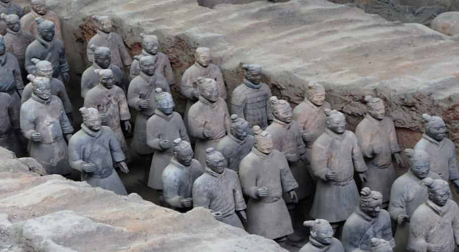
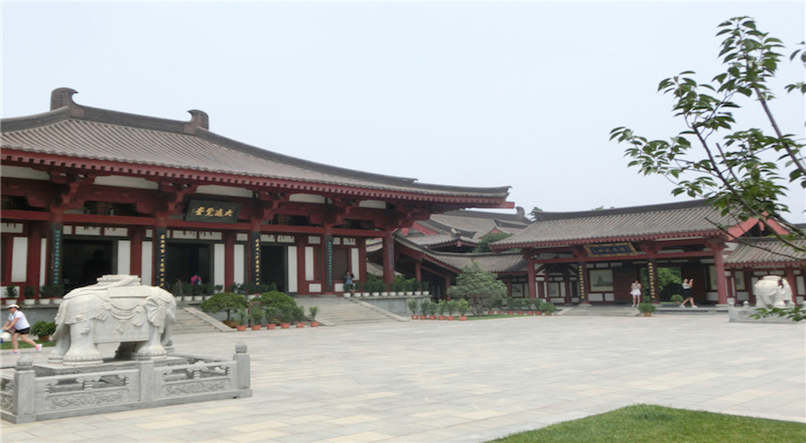

Acerca de China - Historia
La historia documentada de China se remonta a casi 5.000 años atrás , comenzando con el reinado del legendario Emperador Huangdi en el 2698 a.C. Desde entonces , China fue gobernada por 396 emperadores y 162 reyes de 83 dinastías, que fueron sustituidas en 1911 por las Repúblicas de China.
El Neolítico y las primeras casas reales (9000 - 770 aC).
Alrededor del año 9000 a.C. los primeros pobladores se asentaron cerca del Río Amarillo, llevando una vida sedentaria, y esto es lo que se conoce como la cuna de la civilización china. Durante este tiempo, los primeros chinos desarrollaron el bronce fundido, la cerámica, la ganadería y la agricultura, así como sus primeros instrumentos musicales. Sin embargo, tuvieron que pasar casi 7000 años hasta que apareció la primera dinastía oficial, la dinastía Xia.
Con el comienzo de la dinastía Xia en el año 2000 a.C., empezó la época de las dinastías más poderosas, las cuales dominan gran parte de la esfera cultural china . Durante este tiempo, surge la creencia de que el gobierno del rey se deriva de la voluntad del cielo, y es el hijo mayor el que debe tomar la soberanía y seguir las costumbres. Los chinos desarrollaron los rasgos de su escritura y aprendieron a fabricar seda. La gran época de las primeras dinastías termina con el rey Zhou You, alrededor del año 770 antes de Cristo, quien expulsó a su esposa de la corte real, para casarse con su concubina . El imperio feudal de Zhou se mantiene unido por complicados lazos familiares, pero el acto del rey llevó a la revolución por parte de la familia de la reina y la independencia de facto de los principados individuales.
Del Período de Primavera y Otoño, los Imperios Combatientes y la primera unión ( 770-210 aC).

El período entre los años 770 a.C. y 221 a.C. se conoce comúnmente como el período de Primavera y Otoño (el nombre viene de los Anales de Confucio ), y se refiere al período de los Imperios Combatientes (nombre de la obra de Liu Xiang ). Aunque este período se caracterizó por la lucha constante de los principados e imperios individuales, esta época es considerada como la Edad de Oro de la cultura china. Confucio diseñó su filosofía y Lao Tse , cofundó el Taoísmo , una de las religiones del mundo de hoy en día (ambos son , probablemente, los más destacados representantes de cientos de escuelas de la filosofía de este período). Además , los chinos aprendieron a forjar el hierro e inventaron la construcción por módulos para la producción masiva y el cromado.
Estas innovaciones tecnológicas permitieron al reino de Qin ( después de que China asumiera su nombre actual ), conquistar los otros reinos del país en 9 años y, de paso, unificar China en el año 221 a.C. Para expresar su singularidad , el rey Qin se hizo llamar Emperador Ying Zheng ( Huangdi ) . El primer emperador de China, tiene mucha controversia. Por un lado , se unificaron el imperio, las medidas y la escritura. Él construyó la primera Gran Muralla y su tumba, está protegida por el ejército de terracota , mundialmente famoso . Dividió a China en 36 prefecturas y abolió las oficinas administrativas y militares heredadas. Todo el mundo era todo lo libre que pudiera, según sus capacidades, logros y habilidades. Pero, por otra parte , introdujo un sistema legal draconiano que regulaba los más pequeños detalles de la vida diaria. Las diferentes filosofías fueron prohibidas y sus escritos quemados, enterraron vivos a 460 eruditos confucianos como intimidación. Hacia el final de su reinado, alrededor del 10 % de la población China, fue esclavizada y trabajó para los proyectos de construcción masiva.
La dinastía Han ( 210 aC - . 220 dC . )

En el año 210 a. C., cayó el nieto de Ying Zheng tras una revolución campesina y terminó la dinastía Qin, después de sólo 11 años en el poder. Durante ocho años, los líderes del levantamiento lucharon en una sangrienta guerra civil hasta el 202 antes de Cristo. Liu Bang salió victorioso , y se estableció en el poder la dinastía Han , apellido mayoritario de los chinos hoy en día. Durante el reinado de más de 400 años de los Han, el confucianismo se elevó a Filosofía del Estado y se sentaron las bases del famoso sistema de los funcionarios de la educación china que duraría hasta 1911. Los Han subdividieron la población en cuatro clases: la aristocracia era la más alta, seguida por los funcionarios; artesanos y campesinos ocuparon el tercer lugar en la jerarquía social, y los comerciantes que no producían nada ellos mismos, pertenecían a la clase más baja . Durante este tiempo, Cai Lun descubrió la fabricación del papel y la Ruta de la Seda se consolidó como la ruta comercial entre Oriente y Occidente.
La nueva escisión y el auge y decadencia de la dinastía Tang (220-907 d.C.)
La Rebelión de los Turbantes Amarillos, trajo consigo la caída de la dinastía Hang en el año 220 d.C. y las divisiones del territorio chino durante los siguientes 400 años. Esto cambió cuando el poderoso oficial Li Yuan se declaró emperador en el año 618 y consiguió la unión de China en tan sólo 5 años. Fundó la dinastía Tang, una de las dinastías más cosmopolitas de la historia china. Aunque los emperadores Tang eran budistas, concedieron la libertad de creencia . Permitieron que miembros chinos se pudieran casar con extranjeros e incluso que los soberanos se casaran con miembros de las minorías, con el fin de mantener la paz. Durante este tiempo , vivió la primera y única emperatriz que gobernó con su propio nombre el trono de China: Wu Zetian , hija de un ex-comerciante , cuyo poder deriva de la dinastía pre-cristiana de Zhou. La dinastía Tang inició la segunda Edad de Oro en la historia china . Llegaron numerosas escrituras budistas, desde la India a China, y fueron tallados en rocas 492 templos de Buda, de los cuales 232 todavía se conservan . Durante este tiempo, los chinos inventaron la imprenta y Sun Simiao escribió su obra de referencia sobre la medicina: Recetas que valen más de mil piezas de oro , que describe más de 800 plantas medicinales y más de 5.000 aplicaciones. Creció alredeor de ello un sinnúmero de alumnos y admiradores y se escribieron 50.000 poemas.
Segunda división, Yuan y Ming (907 - 1644 d.C.)
En el año 907 se asentó un gobierno militar durante casi 400 años, establecido por el último emperador Tang, que volvió a dividir China. Kublai Khan, nieto de Genghis Khan, completó la conquista de China en 1279, y se trasladó la capital de su imperio desde Mongolia, a Pekín (entonces llamada Dadu ) y fundó la dinastía Yuan , que perduró hasta 1368. En este tiempo tuvo lugar un gran intercambio cultural con Occidente: mientras que el Islam y el Lamaísmo , y nuevos cultivos e instrumentos musicales occidentales llegaban a China, la pólvora y la porcelana llegaban a Occidente. No obstante , los emperadores Yuan fueron considerados por los chinos como conquistadores , mientras que las propias clases sociales chinas eran muy pobres.
En 1368 el ex-monje budista Zhu Yuanzhang llevó a cabo una revuelta campesina contra los Yuan, conquistando la capital Dadu y fundando la dinastía Ming. El emperador Ming mantuvo su dinastía en contacto permanente con los países de Europa y cedió Macao en 1557 a Portugal. La Dinastía Ming es famosa, principalmente, por cuatro cosas : por la construcción de la Ciudad Prohibida entre 1406-1420 (el palacio más grande del mundo), por la construcción de la muralla Ming ( lo que hoy llamamos la Gran Muralla China) , por los viajes de Zheng He (que exploró el Océano Índico con cientos de barcos) y por su porcelana , de la cual se han exportado alrededor de 3 millones de objetos al extranjero. Después de la sequía del año 1627, los campesinos no podían pagar sus impuestos y comenzaron una rebelión contra la dinastía Ming; llegaron a Pekín en 1644 , y fue la capital del emperador Yongle desde entonces. El Emperador Chongzhen no vio ninguna salida y se ahorcó con una hebra de seda amarilla en la colina de detrás de la Ciudad Prohibida.
La Dinastía Qing: la última en China (1644 - 1911)
Después de la caída del último emperador Ming, el general Wu Sangai, que ocupó el extremo oriental de la Gran Muralla, se vio entre dos enemigos y decidió negociar con los manchúes y hacer una alianza con el Príncipe Dorgon. Un mes más tarde, los manchúes conquistaron Pekín y el emperador Shunzhi de la dinastía Qing, la fundó como su capital en 1644. En sus primeros años , la dinastía Qing tuvo mucho éxito, el reino se expandió hacia el sur y el oeste y venció a los rusos en el norte, trayendo casi dos siglos de estabilidad. Sin embargo, el éxito llevó a una falsa sensación de seguridad y durante el siglo XVIII fueron omitidos importantes procesos de modernización de la tecnología y la administración. Tras una serie de sucesos, Qing de China cayó tras la primera Guerra del Opio en 1841 y comenzó su declive tras los llamados Tratados Desiguales. Los países industrializados de Occidente y Japón exigían al emperador Qing cada vez más derechos especiales, y los propios desacuerdos internos impidieron que China fuera una colonia de gran poder. Por último, las humillaciones percibidas y el declive económico de 1911 llevó a la revolución y, el 1 de enero de 1912, Sun Ya- Tsen proclamó la República de China.
La República China (1912-1949)
La primera República China había heredado muchas cargas del imperio. No había un solo centro de poder y las potencias extranjeras ejercían el control de facto sobre grandes partes de China . Sólo en 1927 logró el líder nacionalista, el General Chiang Kai- Shek tener gran parte de China bajo su control. Después de las reformas iniciales y los grandes proyectos de construcción para mejorar la infraestructura, siguió un breve período de recuperación en el que China logró un crecimiento económico medio del 9,3 % anual (1931-1936) . Sin embargo , los intereses imperiales japoneses impidió a Chiang Kai-Shek derrotar a su oposición interior china. En 1936 fue detenido por sus propios generales en Xi'an y obligado a tomar medidas contra los intereses extranjeros. Sin embargo , todos los esfuerzos fueron inútiles , ya que Japón con su ataque a Nanjing abrió la segunda guerra chino- japonesa en diciembre de 1937 . A pesar de pérdidas significativas por parte de China , los japoneses no se echaron atrás hasta el final de la Segunda Guerra Mundial en 1945. Pero, incluso después del final de la guerra, la paz no duró mucho , y Chiang Kai-Shek inició en 1946 la guerra civil china , por la ruptura del acuerdo de amistad con los comunistas, atacando el norte de China. A pesar del gran apoyo de los EE.UU., carecía del apoyo de la población rural y no logró derrotar a los comunistas de Mao Zedong; tuvo que exiliarse a Taiwan en 1949 , todavía reconocida oficialmente como de la República de China.
República Popular de China (desde el 01-10-1949)

El 1 de octubre de1949 se proclamó a Mao Zedong como presidente de la República Popular de China , que todavía existe hoy en día. De acuerdo con las reformas internas y la redistribución de la propiedad de la tierra, los primeros años de la República Popular China comenzaron siendo bastante prometedores y, entre 1952-1957, alcanzaron una tasa de crecimiento económico del 8.9 % anual , similar al de finales de los años treinta. Sin embargo , las esperanzas iniciales , fracasaron en los grandes proyectos socialistas del Gran Salto Adelante , lo que llevó a una terrible hambruna. Después de un período de debilidad política, Mao Zedong inició la Revolución Cultural , que terminó en desastre y, entre 1966-1976, se paralizó el país. Sólo dos años después de su muerte , el Partido Comunista se puso de acuerdo en otorgarle el liderazgo a Deng Xiaoping para cambiar de rumbo . Deng se caracteriza por el dicho: " Mao era un 70 % bueno y un 30 % malo", y define el socialismo chino como todo aquello que fortalece y equipara las fuerzas productivas del país, haciendo al país, asimismo, más fuerte y elevando el nivel de vida de la población. Poco a poco, los precios previstos son abolidos y en 1980 crearon las primeras zonas económicas libres en las regiones costeras, que marcan el inicio de la apertura de China . Desde entonces, la apertura económica de China está progresando y es interrumpida sólo por el movimiento de protesta en la plaza de Tiananmen ( 1989 ). Hong Kong en 1997, (desde 1842 en manos de los ingleses ) y Macau en 1999 pertenecen de nuevo a China. En 2001 China entra en la OMC; en 2003 China envía sus primeros astronautas al espacio y todo el pueblo chino se enorgullece de haber sido sede de los Juegos Olímpicos de 2008 . Hoy en día , China es la segunda economía más grande del mundo y uno de los países de más rápido desarrollo mundial.